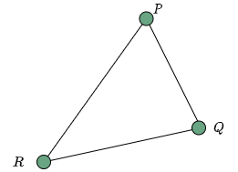

计算机图形学
第四章 几何和变换
几何基础
几何基础
基本元素
几何，研究的是在$n$维空间中物体之间的相对关系。在计算机图形学中，主要关注于三维空间中物体的相对关系。
构建三维空间中的物体，需要一组基本图元，这些基本图元可以由三种基本元素构成：
- 标量(Scalars)
- 向量(Vectors)
- 点(Points)
几何基础
几何形体
简单几何形体，大部定义在笛卡尔坐标系(Cartesian)中，点可表示为坐标系中的坐标，$p=(x,y,z)$，所有的计算都可通过对坐标进行代数运算得到。
实际运算中，这种运算并不符合物理实际。实际上，点的存在与任何坐标系的存在无关，几何结果也与坐标系无关。比如，在欧氏几何学中，两个三角形，只要他们的边及对应的夹角都相等，就认为这二者是相同的
几何基础
标量(Scalars)
几何中的标量，可定义为一组集合中的元素，可以通过加法和乘法连接，同时遵循几种原子运算法则，包括交换性、结合性、可逆性等。比如，我们熟悉的实数、复数就属于标题。标量没有几何属性
几何基础
向量
向量，具有两个属性，方向和长度。典型的向量，包括力、速度、有向线段等。其中，有向线段在图形学中十分重要，还可以映射到其它类型
几何基础
线性向量空间
线性向量空间是向量操作的数学基础，其中的操作包括两类
- 向量和标量相乘: $u=\alpha v$
- 向量和向量相加: $w=u+v$
- 如$v=u+2w-3r$，在向量空间中成立
几何基础
相同向量
下图中，所有的向量都相等，因此向量空间用于表示几何形体时还需要配合点进行表示

几何基础
点
点，表示了空间中的位置
点与点相减，可得到一个向量，即$v=P-Q$
点与向量相加，可得到另一个点，即$P=v+Q$几何基础
仿射空间
- 仿射空间
- 由点和向量构成的空间，其中能够执行的操作包括:向量相加；标量和向量相乘；点和向量相加，标量和标量间运算。且对任意点定义有 \[\begin{aligned} 1\cdot\mathbf{P}=\mathbf{P}\\ 0\cdot\mathbf{P}=\mathbf{0} \end{aligned}\]
几何基础
线
所有的点形如:$P(\alpha)=P_0+\alpha d$，有这些点都位于通过点$P_0$且沿着方向为$d$的射线上

几何基础
线的参数方程
直线的这种定义形式称为直线的参数方程，与其它形式相比，这种形式更为健壮，容易拓展到曲线和平面上
在二维平面上定义直线，有以下三种方程形式：
- 显式定义: $y=mx+b$
- 隐式定义: $ax+by+c=0$
- 参数形式： \[\begin{aligned} x(\alpha)=\alpha x_0+(1-\alpha)x_1\\ y(\alpha)=\alpha y_0+(1-\alpha)y_1 \end{aligned}\]
几何基础
射线和线段
参数形式：$P(\alpha)=\alpha P_0+(1-\alpha)P_0$
- 若$\alpha\geq 0$，则$P(\alpha)$为沿着$d$方向远离$P_0$的射线，若用两个点$P$和$Q$定义$v$，则有$P(\alpha)=Q+\alpha(R-Q)=Q+\alpha v=\alpha R+(1-\alpha)Q$。此时，对于$0\leq\alpha\leq 1$，定义的则为所有位于线段$RQ$上的点
几何基础
凸包性
一个形体是凸的，当且仅当形体内连接任意两个点的线段都在形体内部时成立
几何基础
仿射和
仿射和(Affine Sum)，其形式为$P=\alpha_1P_1+\alpha_2P_2+\cdots+\alpha_nP_n$，其中$\alpha_1+\alpha_2+\cdots+\alpha_n=1$，称为在点$P_1,P_2,\ldots,P_n$上的仿射和
如果对所有的点，都有$\alpha_i\geq 0$，则称为点集$P_1,P_2,\ldots,P_n$上的凸包(Convex Hull)
几何基础
凸包
点集$P_1,P_2,\ldots,P_n$上的凸包，定义为能够包围点集中所有点的最小的凸形
几何基础
曲线和曲面
曲线，用方程表示有$P(\alpha)$，其方程表达式为非线性
曲面，同理，由带两个参数的方程$P(\alpha,\beta)$表示，若方程为线性，则表示为平面和多边形
几何基础
平面
平面有两种定义方式：
一个点和两个向量
.
三个点
几何基础
三角形

图中，$S(\alpha)$为$P$和$Q$的仿射和，$T(\alpha,\beta)$为$S(\alpha)$和$R$的仿射和，若$0\leq\alpha,\beta\leq 1$，则所有的点都定义在三角形$PQR$内部
几何基础
重心坐标
三角形为凸形，因此所有位于其内部的点均可表示成仿射和的形式 $$P(\alpha_1,\alpha_2,\alpha_3)=\alpha_1P+\alpha_2Q+\alpha_3R$$ 有$\alpha_1+\alpha_2+\alpha_3=1, \alpha_i\geq 0$，这种形式就称为$P$的重心坐标(Barycentric Coordinate)表示
几何基础
法线
在三维空间中，对每个平面都有一个向量$n$与其垂直，或与其正交，该向量称为法向量(normal vector)
对由一点和两向量构成的平面$P(\alpha,\beta)=P+\alpha u+\beta v$，可利用叉积(cross product)计算对应的法向量$n=u\times v$，对应于$(P(\alpha,\beta)-P)\cdot n=0$